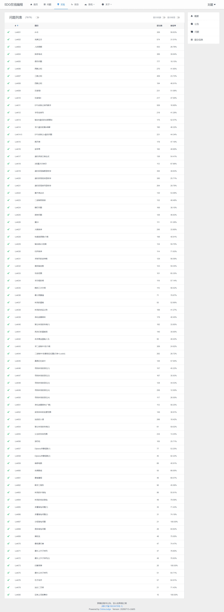
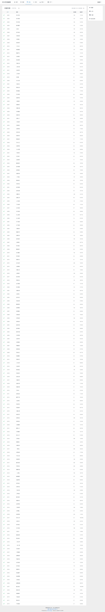

程序设计 · 题解全集
共 50 道题解 · 涵盖基础算法、递归回溯、分治排序、二分查找、动态规划与搜索优化
XMUOJ 用户名：22920252203460
A+B
注意输出格式要求，endl 用于换行，不要漏掉。
完美立方
设置中间变量 a3、b3 等可以避免在每层循环中重复计算立方值，提高代码可读性和运行效率。
人的周期
直接跳过不是周期公倍数的天数可以大幅提高运行效率，比逐天枚举快得多。注意三个周期互质，LCM(23,28)=644。
排序考试
利用 C++ 内置的 sort 函数可以简化代码，注意控制输出格式，末尾不能有多余空格。
假币问题
!= up/down 与 == down/up 并非等价关系，因为还有平衡状态 even。判断条件时要仔细考虑所有情况，不能简单地将条件取反。
两数之和
通过比较实际和与目标值的大小关系来灵活移动指针，注意题目要求输出的是下标而非数值本身。
三数之和
输入的整数数组未必是升序排列的，输入数据后一定要先用 sort() 排序。注意题目要求输出的是数据本身而非下标。
四数之和
思路与三数之和类似，先固定第一个数据，再在此基础上固定第二个数据，最后运用双指针找后两个数。使用 long long 防止四个 int 相加溢出。
汉诺塔Ⅰ
熟记汉诺塔递归的固定模板：先移 n-1 到辅助柱，再移最大盘到目标柱，最后移 n-1 到目标柱。
汉诺塔Ⅱ
此题与上一题思路一致，只是输出格式多了盘子编号。满足最少移动步数的必然要求就是大盘不能放在小盘上方。
DFS试炼之排列数字
熟记全排列递归的固定模板：used 数组标记 + path 记录 + 回溯恢复。从小到大枚举数字天然保证字典序输出。
字符全排列
字符全排列用 string 数据类型存储会比较方便。为了保证结果输出顺序满足字典序要求，在递归之前先将字符按升序排列。
输出N皇后的全部摆法
方法依旧是运用全排列模板，但需要额外标记行、列、主副对角线的占用情况。对角线的判断利用了 row-col 和 row+col 的数学性质。
求八皇后的第n种解
该题与上一题的区别在于已知皇后的个数固定为 8，求第 n 个固定解。先递归求出所有解再按顺序储存，比记次数逐次求解方便快捷得多。
DFS试炼之n皇后问题
全排列的递归逻辑不变，关键是识别各个数字的具体含义，根据标记来输出对应的符号（Q 或 .）。
爬天梯
将爬天梯问题抽象为斐波那契数列的运用。因为走到第 n 阶台阶之前可能在第 n-1 阶或第 n-2 阶，由此推出 f(n) = f(n-1) + f(n-2)。用滚动变量代替数组节省空间。
放苹果
递归要找到数据最基本的组成条件。放苹果时要考虑到两种情况：有空盘子和没空盘子。同时也要考虑极端条件（如 m=0、n=0）的处理。
递归求波兰表达式
cin 的输入逻辑是按空格分隔读取的，每调用一次都会自动推进至下一个 token。利用这个特性可以省去手动管理下标的麻烦。
2的幂次方表示
递归分解的本质是二进制表示，2¹ 需简写为 "2" 而非 "2(1)"，这是题目的特殊规则，注意不要遗漏。
递归实现指数型枚举
位运算枚举是子集生成的经典写法，1<
递归实现组合型枚举
组合枚举的关键是控制搜索起点 start，每次从 i+1 开始递归，天然保证了升序和不重复。与全排列的区别在于不需要 used 数组。
递归实现排列型枚举
STL 的 next_permutation 一行搞定全排列，比手写 DFS 更简洁。但注意它仅适用于数组元素可比较的场景，且起始数组必须是最小排列。
算术表达式
遇到 * 先暂存连乘积，遇到 + 再累加，巧妙利用先乘后加规则。一次遍历即可完成，无需栈或递归，时间复杂度 O(n)。
二进制密码锁
第一位的选择决定全局，一旦确定则后续按钮全部唯一确定，分两种情况取最小即可。这是典型的「首项确定，贪心递推」思路。
熄灯问题
与二进制密码锁思路一致，第一行枚举确定后，后续行的操作全部唯一确定，贪心递推即可。5×6 的规模，第一行枚举仅 64 种。
拨钟问题
4⁹ 枚举量仅 26 万，暴力完全可行。利用每 2 位压缩状态表示操作次数，配合剪枝(total >= bestCnt)跳过非最优解。
算24
递归合并两数的思想是关键，6 种运算覆盖所有可能的运算组合。浮点比较用 fabs < 1e-6 而非 ==，因为除法会产生浮点误差。
大数排序
手写快排理解分区思想，十万级数据必须关闭 cin 同步（ios::sync_with_stdio(false)），否则 IO 耗时远超排序本身。
快速选择第k个数
快速选择只递归一侧，平均 O(n) 远优于全排序 O(n log n)。随机选择 pivot 是避免退化到最坏 O(n²) 的关键。
输出前K大的数
降序排序后取前 k 个是最简单直观的做法，O(n log n) 完全够用，无需手动维护小根堆。
归并排序
归并排序是稳定排序的典范，合并时使用 <= 而非 < 保证稳定性。分治思想也是求逆序数等进阶问题的基础。
求排列的逆序数
归并排序统计逆序对是经典技巧，关键在合并时一次性统计 mid-i+1 个逆序。答案可能超 int 范围，必须用 long long。
查找指定数
哈希表 O(1) 查询是此类问题的最优解，比排序+二分更简洁高效。适合无重复元素的场景，若有重复元素则需记录多个下标。
攻击范围
lower_bound + upper_bound 组合是区间查询的标配。当 l > r 时说明元素不存在，否则区间为 [l, r]。
求方程的根
二分求根要求函数单调且两端异号，精度控制到 1e-10 比输出要求高一位，保证 9 位小数完全准确。
数的三次方根
负数也有实数立方根，二分区间必须覆盖负数范围（如 [-22, 22]），不能用 [0, 10000] 作为区间。
最小预算值
二分答案的经典模板：左边界是单日最大值（不能拆分一天），右边界是总和。贪心判定可行性，每次二分 O(n) 检查。
林克的蛋糕
约去公共因子 π 避免重复浮点运算，二分实数时精度设为 1e-7 保证 3 位小数正确。注意每份不能跨蛋糕拼接。
林克的命运之阵
n ≤ 20 步，DFS 回溯完全可行。起点放在中心 (25, 25) 避免越界，方向数组不含向上是题目的关键限制。
净化迷雾森林
BFS 求连通块是最经典的网格搜索题。多组输入记得清空 vis 数组，字符 # 代表不可通行的墙壁，注意不要混淆 W 和 H 的含义。
骑士林克的怜悯（1）
骑士周游问题的 DFS 回溯解法，8 个方向按字典序排列是保证输出字典序最小的关键。found 剪枝一旦找到解就立即终止。
英杰们的蛋糕塔
DFS + 剪枝是搜索优化的核心。多维度剪枝（体积、表面积、几何）将指数级搜索空间降到可接受范围，是本题通过的关键。
击杀黄金蛋糕人马
三维 DP 预处理后 O(1) 查询，分割问题是经典区间 DP 变种。关键在于枚举切割位置和分配块数，取 max(子问题) 的最小值。
求二进制中1的个数
n & -n 提取最低位 1 是位运算的经典技巧，对正负数补码表示均有效，且比逐位遍历效率高得多。
二进制中1的最低位位置
lowbit 一定是 2 的幂，右移直至 1 即可得到位置。这种方法比逐位检查更直接高效。
真假记忆碎片
数独验证三要素：行、列、宫格均无重复，且与初始条件一致。用 seen 数组比哈希表更高效，因为数字范围固定为 1~9。
寻找林克的回忆(1)
MRV 启发式是数独求解的关键优化，每次选候选数最少的格子能大幅减少搜索分支。三个约束数组分别维护行、列、宫格的数字占用情况。
寻找林克的回忆(2)
位运算 XOR 切换约束状态比数组标记更高效，一个整数同时表示 9 个数字的可用性，空间和时间双重优化。打表 pos[lb] 用于快速获取 lowbit 对应的数字。
靶形数独
在标准数独基础上增加权值求最大分数，排序空格按候选数升序处理是剪枝的关键优化。需要搜索所有合法方案而不能提前终止。
16×16字母数独（一）
DLX 算法是精确覆盖问题的最优解，16×16 数独用普通回溯会超时，必须用 DLX 高效维护约束。双向链表实现 O(1) 的 cover/uncover 操作是算法的核心。
没有找到匹配的题目
尝试其他搜索关键词或筛选条件
附录 XMU OJ 题目完成记录
以下为厦门大学在线评测系统（XMU OJ）的题目完成情况截图，作为刷题记录的佐证材料。


点击图片可查看大图